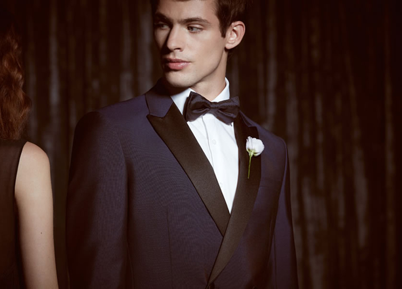
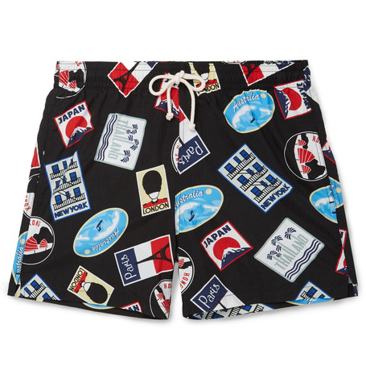

White sneakers
27/06/16 12:45Newsflash: your sneakers are meant for more than just the gym. Though they got their start as flimsy “plimsolls” meant for working-class holidaymakers and purpose-built footwear designed for athletes, sneakers have become a staple in a every man’s (and woman’s, for that matter) wardrobe. Now your sneakers can be a fashion statement as well as workout gear – maybe even both at the same time. Special thanks to Robert Ferris from Harrolds for providing this week’s expert tip.

Sneakers come in many shapes and sizes these days. From the very basic to the brightest leather, from the minimal to the metal fastenings, there are few rules when it comes to your trainers. With so many options available, it can be hard knowing exactly what’s what and even harder to know what’s most likely to suit your wardrobe and taste.
READ MORE...
Category: SHOES
How to wear a tuxedo
27/06/16 12:45Most men feel inadequate when it comes to tuxedo events. Black tie? Very formal? You’re already starting to sweat. But learning how to wear a tuxedo should be celebrated, not shunned. How often do we actually get the chance to dress like the rich and famous – a sleek black tux and patent leather shoes with equally slicked hair – and revel in a 007 reality?

Shaken, not stirred, here’s our official guide on how to wear a tuxedo. We’ve broken down the main pieces and accessories you’ll need, as well as key styling tips for the tuxedo gent: classic, contemporary and creative.
READ MORE...
Category: TOPS
10 things you have to buy this weekend
27/06/16 12:45This week’s shopping guide is big on the light and the bright. Comme Des Garçons’ canary Breton stripe shirt – in transeasonal long sleeve – pulls a vintage-style move with the Adidas Los Angeles sneaker in cobalt blue and Nudie‘s newest denim cut – the Loose Leif – designed relaxed with that soft, worn in feel.

Inject more bright with Dick Moby’s primary green shades and the slogan tote from Opening Ceremony. Both are testament to an accessory’s ability to add interest to neutrals, like the red-brown bomber jacket from Valster – and Saint Laurent‘s classic denim shirt.
READ MORE...
Category: TOP 10
<< 1 2 3 4 5 6 >>